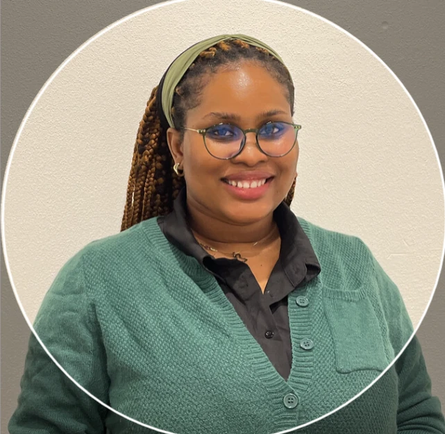
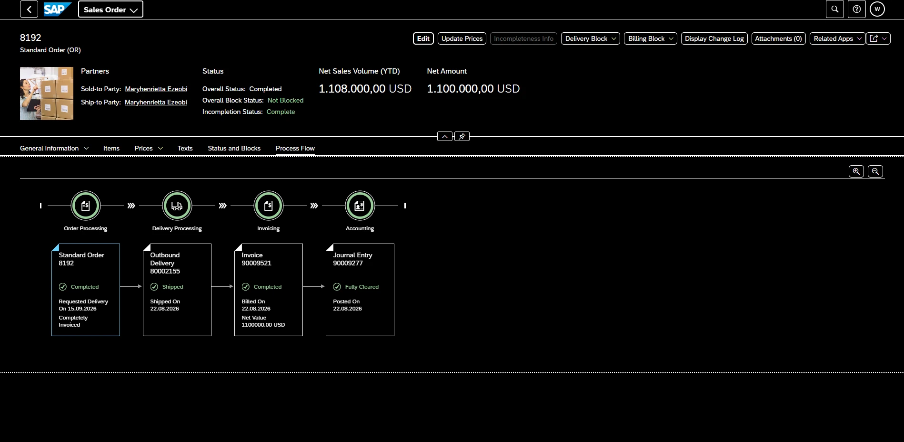
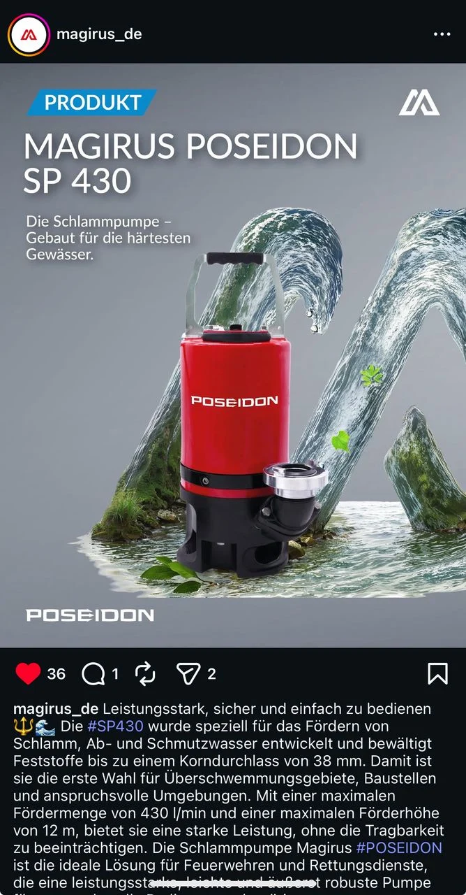
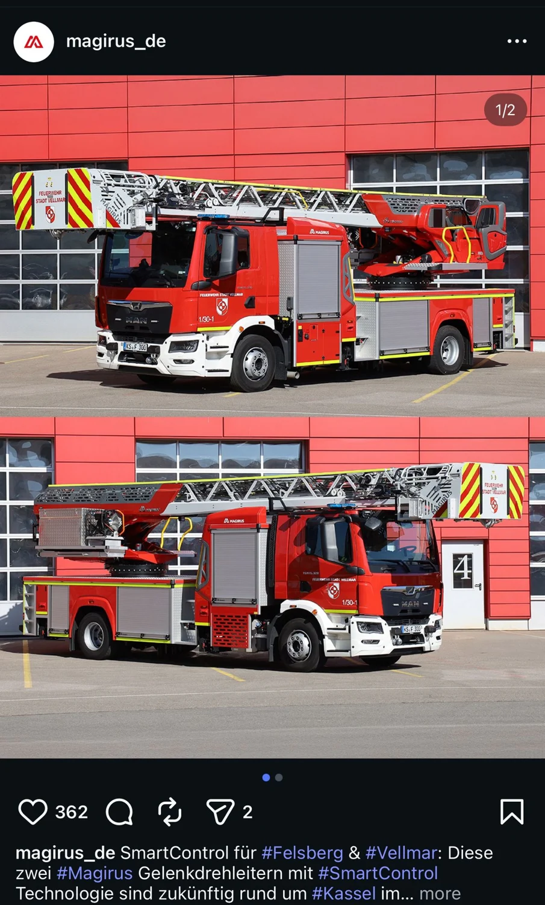
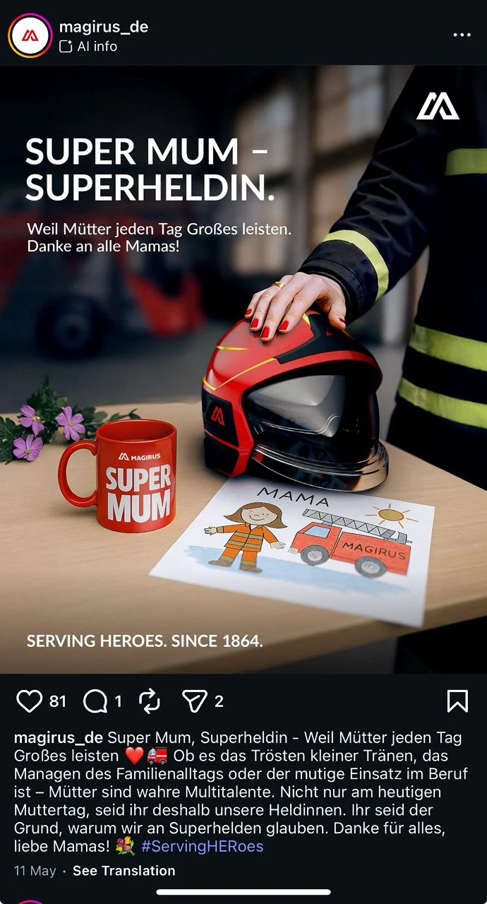
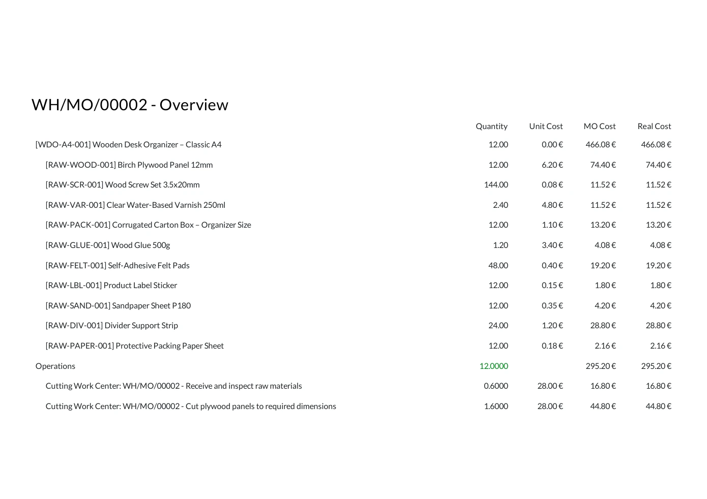
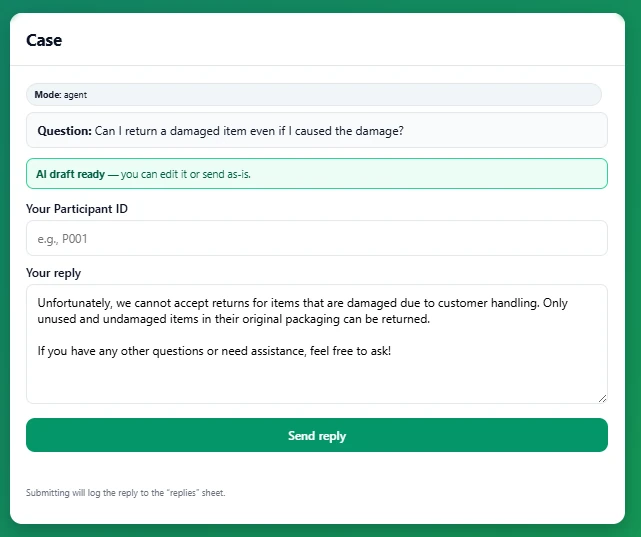
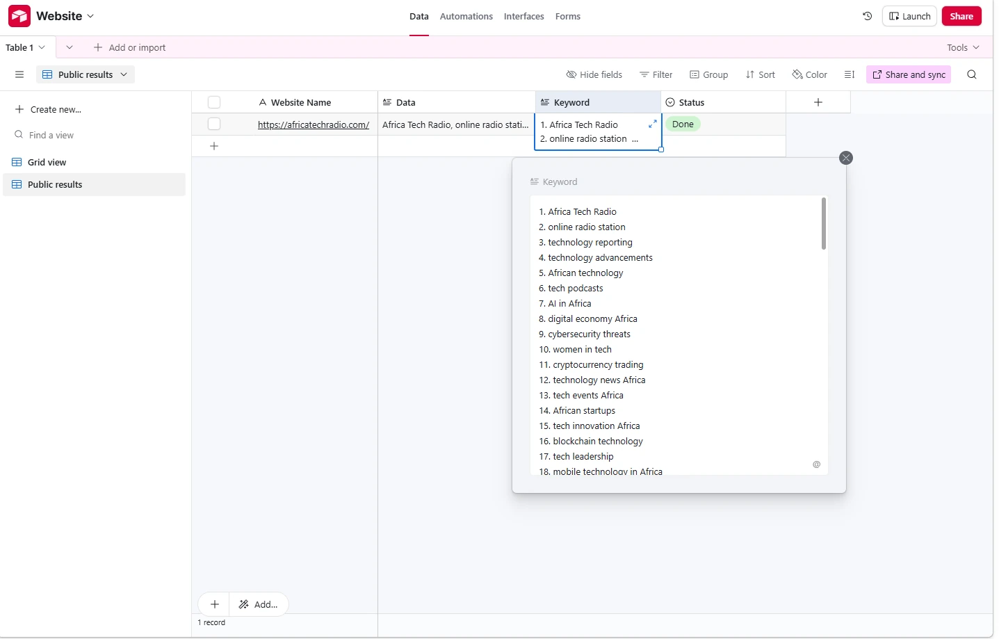
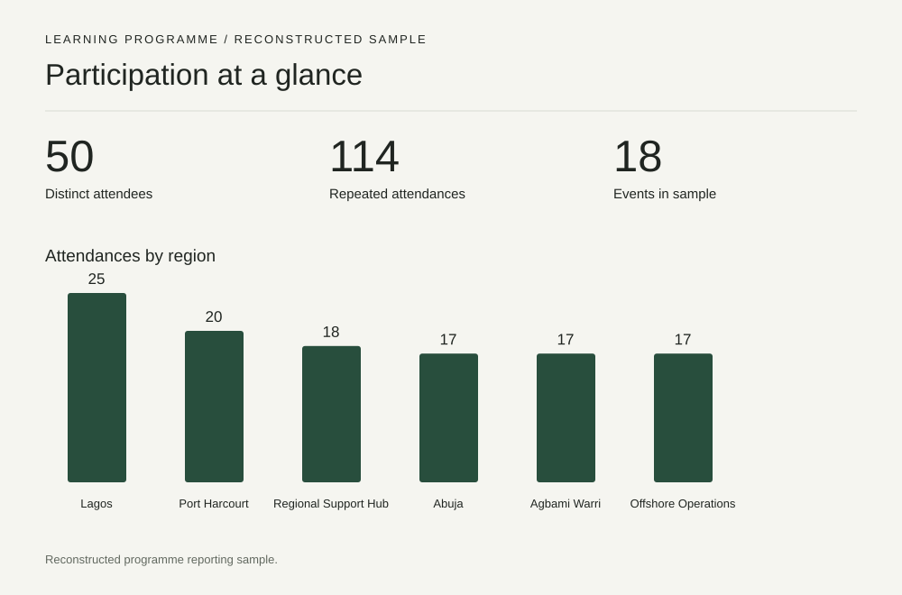
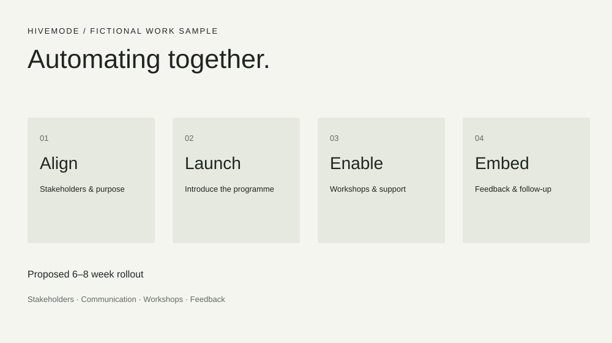

Change management · Digital adoption · MarTech
Digital transformation.
Project coordination.
Coordinating digital initiatives, aligning stakeholders and supporting change.
View selected work
Maryhenrietta Ezeobi
Based in Neu-Ulm, GermanyAbout
Business needs. People.
Digital initiatives.
I work at the intersection of business needs, people and digital initiatives. My experience combines project coordination, stakeholder alignment and marketing operations with hands-on SAP, Odoo and AI workflow projects.
Selected work
Four perspectives. One direction.
Business processes, connected.
01 / SAPHands-on Fiori navigation and end-to-end transactions.



From concept to content.
02 / MagirusCampaigns, photography, video and multilingual communication.

From materials to payment.
03 / OdooManufacturing, inventory and customer fulfilment.

Testing AI in real work.
04 / ResearchReply quality, usability and willingness to adopt.
Presentations. Reporting. Coordination.
Practical work for teams and decisions
SEO research automation
Website content into structured keywords.
Working prototype

KPI reporting & programme coordination
Track participation, organise records and make activity visible.
Reconstructed sample

Presentations & change planning
Turn a rollout brief into a clear, actionable presentation.
Concept project